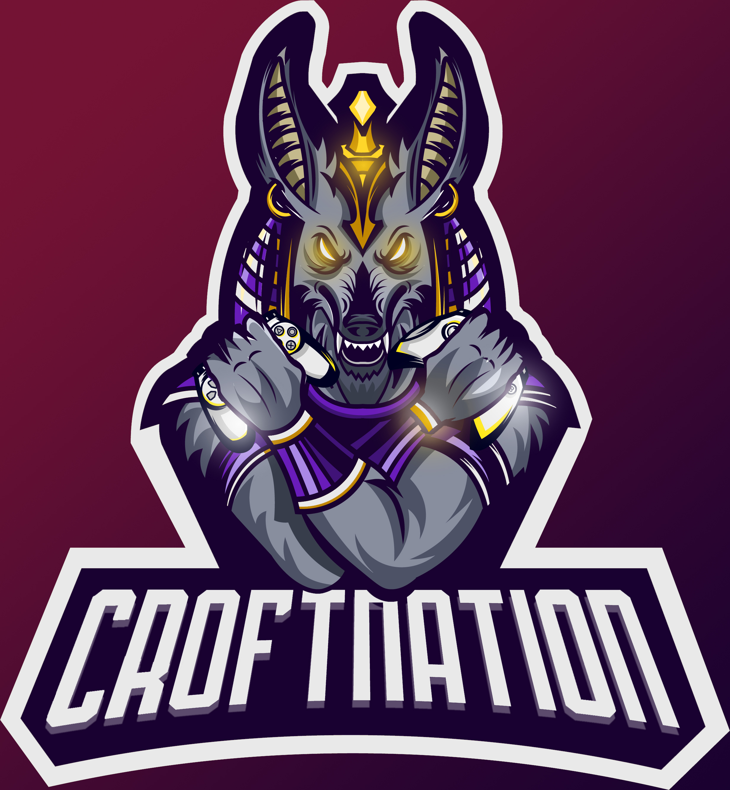

Croft Nation

Hello there! Welcome to the Croft Nation website, the website for an amazing community of streamers and content creators.
Who are we?
Croft Nation is a an amazing community of Twitch streamers and content creators!
In addition to an incredible Twitch community, we also have an active and friendly Discord community, where you can express your streaming tips/ask for help, and you'll almost certainly get a response from one of our Staff members/Stream Team members.
But why not do this alone?
Well, why do streaming alone and by yourself when you can use up all of the amazing power of hundreds of Twitch streamers to make one massive team?
How do I go about joining this team?
It's very easy, all you have to do is join the Croft Nation Discord here: https://discord.gg/Bf8yhB9 (or you can click the Discord icon at the top, or the "Discord" text in the top right), then fill in this Google Form, which will be sent off to one of the Head Council members.
During this waiting time period, which could be up to 2 weeks, you'll be given the "Applicant" role. When you have this Applicant role, you are basically monitored by the higher ups at CroftNation, who will look at your activity as a general streamer, and in the Discord server. A lot of people pressume you have to chat in the CroftNation server 24/7, but this is not the case, you being active could simply be saying "Hello everyone!" to people or "How's your day been?" to a member.
You don't have to just trust us